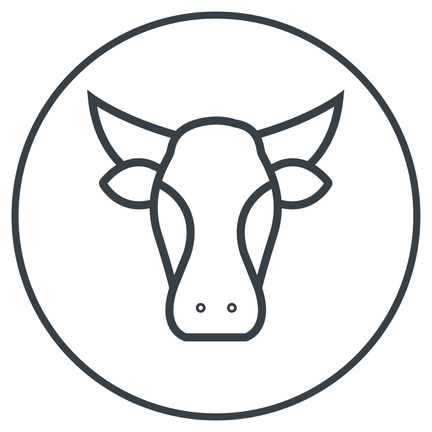
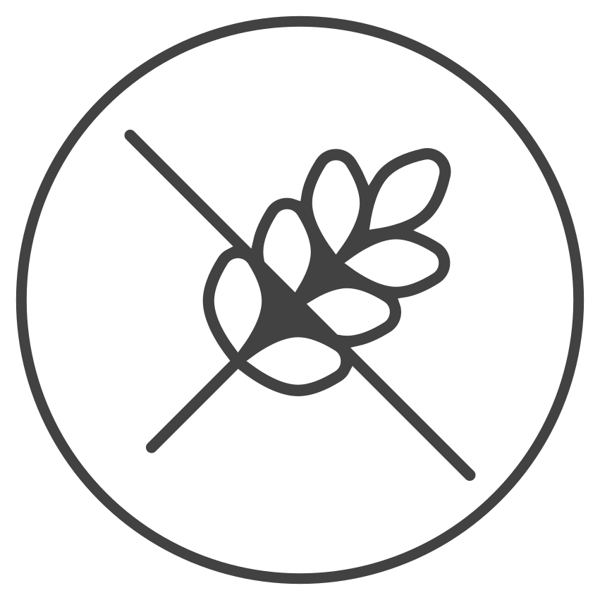
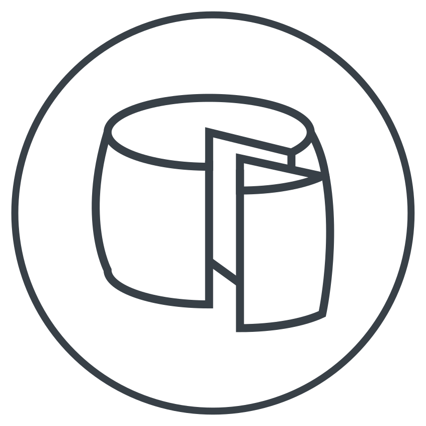

Elaboracion Artesanal
La mano del hombre es fundamental para obtener los mejores quesos.

Sin TACC
Todos los productos son sin gluten, aptos para celíacos

Bajos en lactosa
Todo los productos son bajos en lactosa
Nuestra empresa nace en respuesta a una vocación por la excelencia del sabor, haciendo productos que, antes que nada, disfrutamos consumir. Nunca pretendimos ser los más grandes aunque desde siempre buscamos ser parte de los mejores, trabajando en una escala que nos permita seguir cuidando cada queso individualmente. Nuestras pasturas únicas, la mejor leche, un proceso industrial con rigurosos controles y nuestro tributo a las virtudes.